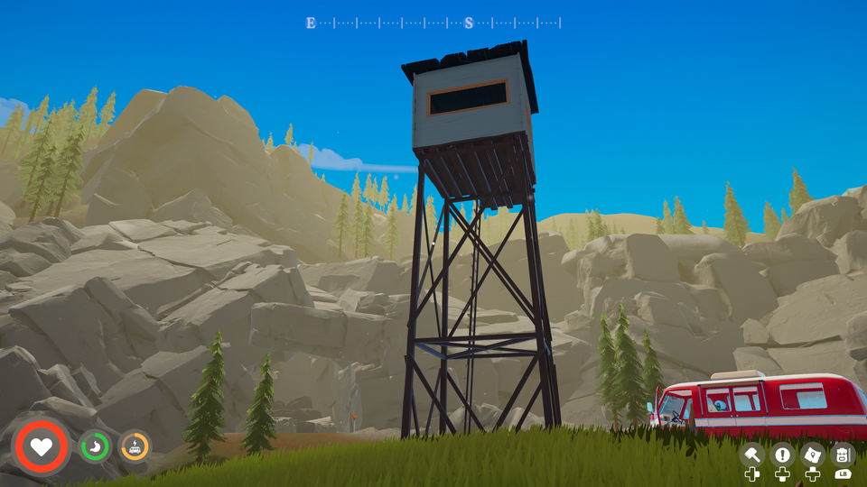

Image Compression Lab
Every setting from Why my smaller image looked better, side by side with the lossless original: 35 settings across WebP, JPEG, AVIF and JPEG XL, on one 4K screenshot from Outbound. The post explains what you're looking at and how the host chose.
Compare every setting
Thirty-five settings, each with the lossless original on the left. Pick a region on the map, then press and hold any right-hand image (or focus it and hold Space) to swap the original into the same spot. Flicking between the two in place shows differences far better than looking side to side. Sharp shows each pixel as a block when zoomed; Smooth blends them as a browser normally does. ☆ Shortlist on any row collects settings to compare; Show: Shortlist hides the rest. The shortlist is kept in your browser only.

The comparison needs JavaScript. Every image is also in the tiles/ folder of the repository.
Caveats
- One screenshot, one game. Outbound is stylised: flat shading, big gradients. Photo-realistic scenes, grain and noise compress less well, and the best settings shift with content.
- One metric. SSIMULACRA 2 is the best available single number for this, not the last word. The viewer is there so you can disagree with it.
- Encode times are from one run on one machine, a home server, and are for comparing settings with each other only.
- Versions matter. Encoders change. These results used Pillow 12.3.0 with libwebp 1.6.0 and libavif 1.4.2, cwebp 1.3.2, and ffmpeg 6.1.1 with libjxl.
Reproduce it
Every number and image on this page comes from one script, run on one screenshot. Try it on your own:
python -m venv .venv .venv/bin/pip install -r tools/requirements.txt .venv/bin/python tools/generate.py your-screenshot.png --out docs
It needs cwebp (Debian and Ubuntu: apt install webp) and an ffmpeg built with libjxl. The prose on this page describes the Outbound screenshot; with a different image, the tables and viewer update but the text won't.